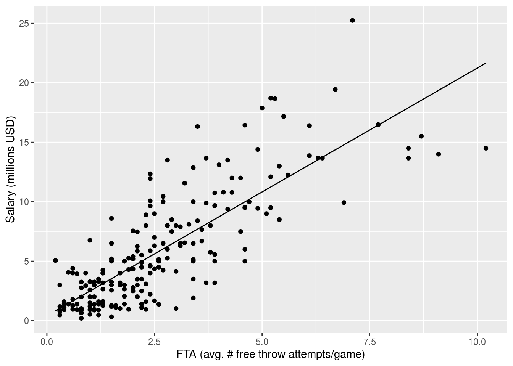

title: “NBA Data Project for DSB Bootcamp 2020” author: “Rocco Davino” date: “Last updated on 2020-06-09” output: html_document: toc: true toc_depth: 2 toc_float: true df_print: kable —
Some basic data analysis
nbadata <- read_csv(file = "NBAData.csv")
# Convert position to factor
nbadata$Position <- factor(nbadata$Position)
# Convert team to factor
nbadata$Team <- factor(nbadata$Team)
# Make column with Salary as dbl
nbadata <- nbadata %>%
mutate(Salary_dbl = str_sub(Salary,2))
nbadata$Salary_dbl <- as.numeric(gsub(",", "", nbadata$Salary_dbl))/1000000
# Rename Length of Contract
nbadata <- nbadata %>%
rename(LOC = `Length of Contract`)First we ask: does position affect salary?
# Scatter plot
nbadata %>%
group_by(Position) %>%
ggplot(aes(x = Position, y = Salary_dbl)) +
geom_point(aes(color = Age)) +
ylab("Salary (millions USD)")# Boxplot
nbadata %>%
group_by(Position) %>%
ggplot(aes(x = Position, y = Salary_dbl)) +
geom_boxplot() +
ylab("Salary (millions USD)")Based on our boxplot, the answer appears to be no. How about 2P, the average numer of shots made inside the 3-point line per game? To help answer this, we use linear modeling.
# Scatter plot
nbadata %>%
ggplot(aes(x = `2P`, y = Salary_dbl)) +
geom_point(aes(color = Position)) +
ylab("Salary (millions USD)") + xlab("2P (avg. # shots made from inside 3-point/game)")# Model 2 by position
nbadata0 <- nbadata %>%
group_by(Position) %>%
#filter(Position %in% c("Forward","Guard")) %>%
nest()
# Functions for regression frame
fit_model <- function (df) lm(Salary_dbl ~ `2P`, data = df)
fit_model_aug <- function (df) lm(Salary_dbl ~ `2P`, data = df) %>% augment()
get_rsq <- function (mod) glance(mod)$r.squared
# Create tidy regression frame
nbadata0 <- nbadata0 %>%
mutate(model = map(data, fit_model))
nbadata0 <- nbadata0 %>%
mutate(aug = map(data, fit_model_aug))
nbadata0 <- nbadata0 %>%
mutate(r.sqradj = map_dbl(model, get_rsq)) # Get R^2
# Plot the regression by position
unnest(nbadata0, aug) %>%
ggplot() +
geom_line(aes(x = `X2P`, y = .fitted, color = Position)) +
geom_point(aes(x = `X2P`, y = Salary_dbl, color = Position)) +
xlab("2P (avg. # shots made from inside 3-point/game)") + ylab("Salary (millions USD)")For each position, the R^2 value is over 0.65 with positive slope. Thus it seems that 2P alone goes pretty far in impacting salary. Let us see if the same holds true for 2P%, the average number of shots made inside the 3-point line divided by the average number of total shots taken inside the 3-point line.
# Scatter plot
nbadata %>%
ggplot(aes(x = `2P%`, y = Salary_dbl)) +
geom_point(aes(color = Position)) +
ylab("Salary (millions USD)") + xlab("2P% (avg. # made inside 3-point/avg. # total inside 3-point)")# Model 2 % by position
nbadata3 <- nbadata %>%
group_by(Position) %>%
#filter(Position %in% c("Forward","Guard")) %>%
nest()
# Functions for regression frame
fit_model <- function (df) lm(Salary_dbl ~ `2P%`, data = df)
fit_model_aug <- function (df) lm(Salary_dbl ~ `2P%`, data = df) %>% augment()
get_rsq <- function (mod) glance(mod)$r.squared
# Create tidy regression frame
nbadata3 <- nbadata3 %>%
mutate(model = map(data, fit_model))
nbadata3 <- nbadata3 %>%
mutate(aug = map(data, fit_model_aug))
nbadata3 <- nbadata3 %>%
mutate(r.sqradj = map_dbl(model, get_rsq)) # Get R^2
#nbadata3$aug[[1]]
# Plot the regression by position
unnest(nbadata3, aug) %>%
ggplot() +
geom_line(aes(x = `X2P.`, y = .fitted, color = Position)) +
geom_point(aes(x = `X2P.`, y = Salary_dbl, color = Position)) +
ylab("Salary (millions USD)") + xlab("2P% (avg. # made inside 3-point/avg. # total made inside 3-point)")The R^2 values are all less than 0.2, and the lines do not fit the data nearly as well. Thus the average number of shots made per game appears to have a larger impact than the percentage. Three pointers have become more prominent recently; did they have any impact on salary circa 2012?
# Scatter plot
nbadata %>%
ggplot(aes(x = `3P`, y = Salary_dbl)) +
geom_point(aes(color = Position)) +
ylab("Salary (millions USD)") + xlab("3P (avg. # shots made from outside 3-point/game)")# Model 3 by position
nbadata1 <- nbadata %>%
group_by(Position) %>%
filter(Position %in% c("Forward","Guard")) %>%
nest()
# Functions for regression frame
fit_model <- function (df) lm(Salary_dbl ~ `3P`, data = df)
fit_model_aug <- function (df) lm(Salary_dbl ~ `3P`, data = df) %>% augment()
get_rsq <- function (mod) glance(mod)$r.squared
# Create tidy regression frame
nbadata1 <- nbadata1 %>%
mutate(model = map(data, fit_model))
nbadata1 <- nbadata1 %>%
mutate(aug = map(data, fit_model_aug))
nbadata1 <- nbadata1 %>%
mutate(r.sqradj = map_dbl(model, get_rsq)) # Get R^2
# Plot the regression by position
unnest(nbadata1, aug) %>%
ggplot() +
geom_line(aes(x = `X3P`, y = .fitted, color = Position)) +
geom_point(aes(x = `X3P`, y = Salary_dbl, color = Position)) +
ylab("Salary (millions USD)") + xlab("3P (avg. # shots made from outside 3-point/game)")As we can visually confirm, these shots already appear to be less important for salary. For centers, they do not matter at all. Even for forwards and guards, the R^2 values are less than 0.09 and the slopes are small. Moreover, the p-value for forwards is greater than 0.05. However, it does look like 3-point shots have some impact on the salary of guards, moreso than forwards, as expected. Three pointers do not affect salary very much for this data set. It would be interesting to study more recent data and see if this has changed. Let us look at 3-point shots by team and see if certain terms value these shots more than others.
nbadata %>%
filter(Position %in% c("Forward","Guard")) %>%
group_by(Team) %>%
ggplot(aes(x = `3P`, y = Salary_dbl)) +
geom_point(aes(color = Position)) +
ylab("Salary (millions USD)") + xlab("3P (avg. # shots made from outside 3-point/game)") +
facet_wrap(~Team)# Model 3 by team
nbadata2 <- nbadata %>%
group_by(Team) %>%
nest()
# Functions for regression frame
fit_model <- function (df) lm(Salary_dbl ~ `3P`, data = df)
fit_model_aug <- function (df) lm(Salary_dbl ~ `3P`, data = df) %>% augment()
get_rsq <- function (mod) glance(mod)$r.squared
# Create tidy regression frame
nbadata2 <- nbadata2 %>%
mutate(model = map(data, fit_model))
nbadata2 <- nbadata2 %>%
mutate(aug = map(data, fit_model_aug))
nbadata2 <- nbadata2 %>%
mutate(r.sqradj = map_dbl(model, get_rsq)) # Get R^2
# Plot the regression by team
unnest(nbadata2, aug) %>%
ggplot() +
geom_line(aes(x = `X3P`, y = .fitted)) +
geom_point(aes(x = `X3P`, y = Salary_dbl)) +
ylab("Salary (millions USD)") + xlab("3P (avg. # shots made from outside 3-point/game)") +
facet_wrap(~Team)
There are very few data points for each team and the R^2 values are small, but it is possible that some teams displayed here do value 3-point shots more. Now let’s consider PER, the NBA’s player efficiency rating statistic.
# Scatter plot
nbadata %>%
ggplot() +
geom_point(aes(x = PER, y = Salary_dbl)) +
ylab("Salary (millions USD)") + xlab("PER") # Model
nba_mod1 <- lm(Salary_dbl ~ PER, data = nbadata)
# Plot
nba_mod1 %>%
augment() %>%
ggplot() +
geom_line(aes(x = PER, y = .fitted)) +
geom_point(aes(x = PER, y = Salary_dbl)) +
ylab("Salary (millions USD)") + xlab("PER") | r.squared | adj.r.squared | sigma | statistic | p.value | df | logLik | AIC | BIC | deviance | df.residual |
|---|---|---|---|---|---|---|---|---|---|---|
| 0.5076755 | 0.5053749 | 3.341642 | 220.6726 | 0 | 2 | -566.0819 | 1138.164 | 1148.29 | 2389.646 | 214 |
There is a relatively strong relationship between this statistic and salary, with an R^2 value of 0.5. We did not look at how to compute this statistic–how complex is it? We study this using multiple regression in terms of simpler statistics, with back selection.
# Regression with all variables
nba_mod2 <- lm(PER ~ GS + FG + FGA + `FG%` + FT + FTA + `FT%` + `3P` + `2P` + ORB + DRB + TRB + `ORB%` + `DRB%` + AST + `AST%` + STL + `STL%` + BLK + `BLK%` + TOV + `TOV%` + PF + MP, data = nbadata)
# Selection
nba_mod2_step <- stepAIC(nba_mod2, direction = "backward",
trace = FALSE)
nba_mod2_step %>%
tidy() | term | estimate | std.error | statistic | p.value |
|---|---|---|---|---|
| (Intercept) | -4.1733878 | 1.2274692 | -3.399994 | 0.0008142 |
| GS | -0.0133034 | 0.0035371 | -3.761078 | 0.0002224 |
| FG | 3.3564369 | 0.2425675 | 13.837127 | 0.0000000 |
| FGA | -1.2756667 | 0.1151437 | -11.078907 | 0.0000000 |
FG% |
10.6600789 | 1.7940375 | 5.941949 | 0.0000000 |
| FTA | 0.7736907 | 0.0665372 | 11.627943 | 0.0000000 |
FT% |
6.7813839 | 0.8116200 | 8.355368 | 0.0000000 |
3P |
1.7321897 | 0.1453090 | 11.920736 | 0.0000000 |
| DRB | -0.2341131 | 0.1051626 | -2.226201 | 0.0271224 |
ORB% |
0.3998366 | 0.0309279 | 12.928032 | 0.0000000 |
DRB% |
0.1307779 | 0.0298651 | 4.378959 | 0.0000193 |
| AST | -0.5242101 | 0.1230805 | -4.259084 | 0.0000316 |
AST% |
0.2962676 | 0.0226330 | 13.090091 | 0.0000000 |
STL% |
1.0256070 | 0.1226000 | 8.365476 | 0.0000000 |
BLK% |
0.4878506 | 0.0586424 | 8.319082 | 0.0000000 |
TOV% |
-0.2645381 | 0.0188963 | -13.999449 | 0.0000000 |
| PF | -0.6300188 | 0.1352395 | -4.658541 | 0.0000058 |
| r.squared | adj.r.squared | sigma | statistic | p.value | df | logLik | AIC | BIC | deviance | df.residual |
|---|---|---|---|---|---|---|---|---|---|---|
| 0.9643114 | 0.961442 | 0.9109094 | 336.0631 | 0 | 17 | -277.4822 | 590.9644 | 651.7194 | 165.1214 | 199 |
# Add and visualize residuals
nbadata <- nbadata %>%
add_residuals(nba_mod2_step, var = "Mod2Res")
nbadata %>%
ggplot() +
geom_histogram(aes(x = `Mod2Res`), binwidth = 1) +
xlab("Residuals") + ylab("Count")With an R^2 value of 0.96, our model does a great job estimating PER. See also the residual distribution. Thus it seems that PER is little more than a linear combination of simpler statistics. Considering the effect of FTA, the average numer of free throw attempts per game, on PER, it is possible that FTA has some effect on salary: after all, players who are fouled more often take more free throws.
# FTA histogram
nbadata %>%
ggplot() +
geom_histogram(aes(x = FTA)) +
xlab("FTA (avg. # free throw attempts/game)") + ylab("Count")# Scatter plot
nbadata %>%
ggplot(aes(x = FTA, y = Salary_dbl)) +
geom_point() +
xlab("FTA (avg. # free throw attempts/game)") + ylab("Salary (millions USD)")
# Model FTA
nba_mod3 <- lm(Salary_dbl ~ FTA, data = nbadata)
nba_mod3 %>%
augment() %>%
ggplot() +
geom_line(aes(x = FTA, y = .fitted)) +
geom_point(aes(x = FTA, y = Salary_dbl)) +
xlab("FTA (avg. # free throw attempts/game)") + ylab("Salary (millions USD)")
# Get R^2
#nba_mod3 %>%
#glance()
# Good across all positions?
nbadata %>%
ggplot() +
geom_density(aes(x = FTA, color = Position)) +
xlab("FTA (avg. # free throw attempts/game)") + ylab("Density")With an R^2 value of 0.65, we see that FTA has a rather strong effect on salary. As the density plot above shows, this is irrespective of position. Therefore we may ask, how far do just 2P and FTA go towards explaining variability in salary?
| term | estimate | std.error | statistic | p.value |
|---|---|---|---|---|
| (Intercept) | -0.5711406 | 0.3303952 | -1.728659 | 0.0853192 |
| FTA | 1.0646173 | 0.1696797 | 6.274276 | 0.0000000 |
2P |
1.0896478 | 0.1507472 | 7.228313 | 0.0000000 |
| r.squared | adj.r.squared | sigma | statistic | p.value | df | logLik | AIC | BIC | deviance | df.residual |
|---|---|---|---|---|---|---|---|---|---|---|
| 0.716817 | 0.7141581 | 2.540299 | 269.582 | 0 | 3 | -506.353 | 1020.706 | 1034.207 | 1374.514 | 213 |
Considering R^2 = 0.71, we see that these two variables alone have a large effect on salary.